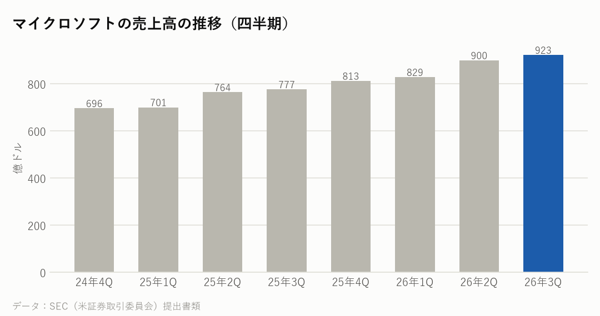
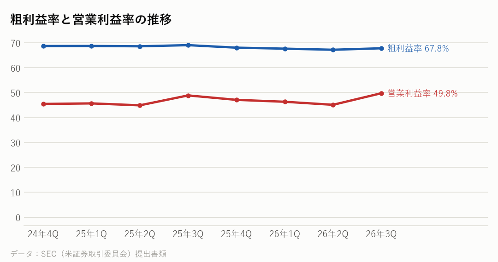
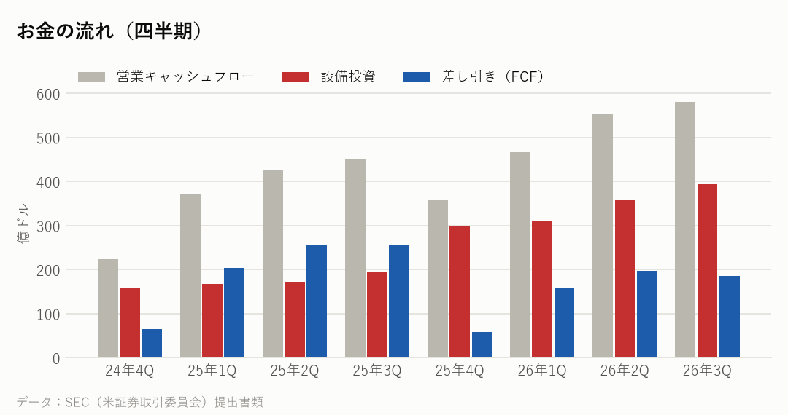
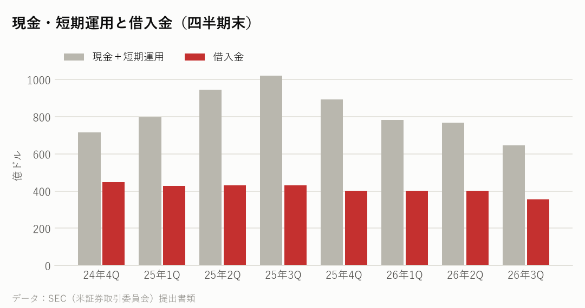
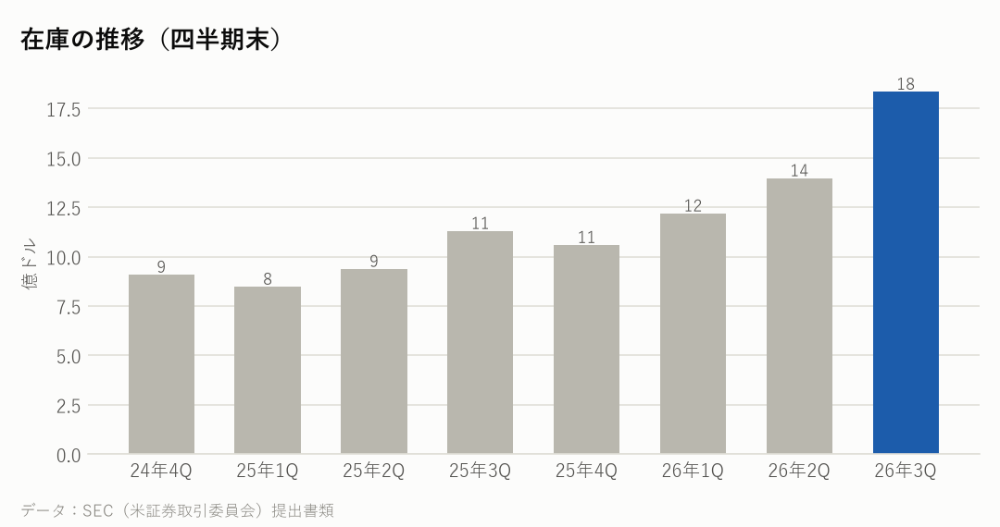

MSFT｜2026年7〜9月期の決算｜決算発表 2026年10月28日
マイクロソフトの決算：Azure 48%増、受注残は6,770億ドルに
7〜9月期の売上高は前年同期比19%増の923億ドルだった。クラウドの Azure が48%伸び、まだ売上になっていない契約済みの受注残は73%増の6,770億ドルになった。10〜12月期の Azure の伸びは49〜50%と、さらに加速する見通しを示した。
主な数字（2026年7〜9月期）
| 今回 | 前年同期 | 前年比 | |
|---|---|---|---|
| 売上高 | 923億ドル | 777億ドル | +18.8% |
| 粗利益率 | 67.8% | 69.0% | |
| 営業利益率 | 49.8% | 48.9% | |
| 純利益 | 366億ドル | 277億ドル | |
| 1株利益（希薄化後） | 4.92ドル | 3.72ドル |
部門ごとの売上
| 部門 | 売上 | 前年比 |
|---|---|---|
| エージェント・インフラ（Azureなど） | 768億ドル | +25.0% |
| デバイス・消費者（Windowsなど） | 155億ドル | -3.0% |

会社の見通し・受注残
| Azure の伸び（10〜12月期） | +49〜50% |
|---|---|
| 設備投資（10〜12月期） | 500億ドル超 |
| 設備投資（2027年・暦年） | 約1,700億ドル |
| 受注残（契約済み・未計上） | 6,770億ドル（+73%） |
- マイクロソフトの決算の区切りでは、7〜9月期は2027年度の第1四半期にあたる。
- 決算説明会で、10〜12月期の Azure の伸びは49〜50%（為替の影響を除く）の見通しを示した（報道より）。7〜9月期の48%から、さらに加速する。
- 設備投資（リースを含む）は7〜9月期が452億ドルで、10〜12月期は500億ドル超を見込む。2027年（暦年）は約1,700億ドルの計画と伝えられている。
- 需要が供給を上回る状態は続いているとし、7〜9月期は外部のデータセンター（GPUを貸す会社）からの受け取りの一部が遅れたと説明した（報道より）。
もうけの力

お金の状況



投資している分（出資の評価額）
| 未上場株などへの出資（帳簿上） | 124億ドル |
|---|---|
| 上場株への出資（時価） | ― |
| 合計 | 124億ドル |
| OpenAI への出資の損益（7〜9月期） | +2.07億ドル |
- OpenAI への出資の損益は、7〜9月期は純利益を約2億ドル押し上げた。前年同期は約31億ドル押し下げていた。会社は、この影響を除いた数字（調整後）も出している。
- 未上場の会社などへの出資は、帳簿上で約124億ドル。
大手クラウドの会社と比べると
各社の直近の四半期。在庫の日数は「在庫が売上原価の何日分か」。
| 会社 | 決算期末 | 売上高 | 前年比 | 粗利益率 | 営業利益率 | 設備投資/売上 | 在庫の日数 |
|---|---|---|---|---|---|---|---|
| マイクロソフト | 2026-09 | 923億ドル | +18.8% | 67.8% | 49.8% | 42.7% | 6日 |
| アルファベット | 2026-09 | 1,276億ドル | +24.7% | 59.7% | 31.8% | 40.3% | 24日 |
| アマゾン | 2026-09 | 2,019億ドル | +12.1% | 53.2% | 13.9% | 38.3% | 41日 |
| メタ | 2026-09 | 646億ドル | +26.1% | 79.3% | 20.1% | 52.5% | ― |
| オラクル | 2026-08 | 193億ドル | +29.6% | ― | 34.8% | 147.3% | ― |
NasdaqWhy の視点：データから読み取れる注目点
決算資料と各社の公式データを並べて読み取れることです。将来を予想するものではありません。
- 設備投資（リースを含む）は452億ドルで、売上の約半分にあたる。設備投資のおよそ75%は、CPU・GPUなど寿命の短い機器だと説明している（報道より）。
- 財務責任者は、後半に設備投資が増える理由の一つに「メモリーとストレージの値上がり」を挙げた（報道より）。メモリーの値上げが、買う側の大手クラウドの投資額をふくらませている形で、SK hynix・サムスン・マイクロンなどメモリーの会社の売上の伸びとつながっている。
- Windows を含むデバイスとライセンスの売上は22%減った。デバイス・消費者の部門の減少にも、メモリーとストレージの値上がりが関係していると説明している（報道より）。
- 受注残の6,770億ドル（+73%）は、まだ売上になっていない契約済みの仕事の量で、1年分の売上の約1.8倍にあたる。
- 差し引きのお金（FCF）は186億ドルで、前年同期より27%減ったがプラスを保った。2027年度もプラスを保つ見込みとしている。手元の現金と短期運用は645億ドル。
次に確認したい決算・予定
- エヌビディアの決算（11月下旬の見込み）：大手クラウドの投資が、AI半導体の売上にどう出ているか。
- マイクロソフトの次の決算（2027年1月下旬の見込み）：Azure の伸びが49〜50%の見通しどおりか、設備投資が500億ドルを超えたか。
- メモリーの値段：大手クラウドの投資額を押し上げる要因として、価格の動きを見る。
関連リンク
出典：マイクロソフト 決算発表（2026年10月28日）・四半期報告書（10-Q）、決算説明会の報道（TheStreet・explainx.ai）、各社の SEC 提出書類
※情報提供のみ。投資判断はご自身でお願いします。※個人運営で、Nasdaq, Inc.とは無関係です。